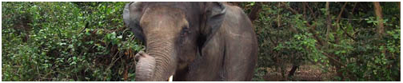
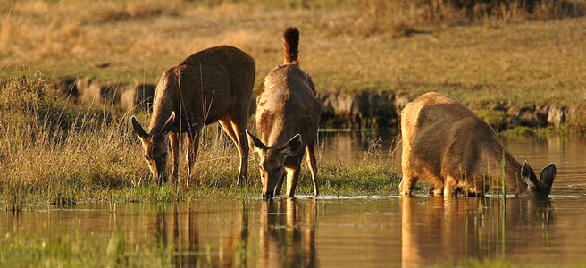

History Of Odisha
Temples & Monuments
Wildlife
Heritage Odisha
Art & Craft
Tourist Spots
Odisha (Formerly Orissa) is blessed with a plethora of natural wonders, from breathtaking beaches and lakes to a wide variety of wildlife nestled in some of the most beautiful forests in the country.

Ambapani
Located 77 kms from Bhawanipatna and 45 kms from Nowrangpur, Ambapani is famous for the deity of Budharaja installed in a small temple at the foot of a hill. The picturesque Ambapani hills present a panoramic view of nature. A frolicking valley called Haladigundi in this range of hills exhibits some peculiar features due to the reflected rays of the sun. The whole area abounds in Spotted Deer, Sambar and Black Panthers which can be seen at the Behera reservoir. 5 kms away are the pre-historic cave paintings at Gudahandi.
Badarama
Badarama sanctury also popularly known as Usakothi, located in the district of Sambalpur, 48 km. from Sambalpur on the NH-6 under Bamra Forest Division. Its prominent and attractive location in western Odisha (Formerly Orissa) with hilly undulating areas and rich dry deciduous mixed forests and wide variety of fauna including tiger, leopard, elephant, hyena, wildboar, spotted deer, sambar, bear, porcupine and a number of birds, reptiles etc. make it very beautiful.
Balukhand
This sanctury is situated at convenient location along sea coast between Puri and Konark. The flora of the area includes casuarina, anacardium, neem, tamarind, karanja, etc. The prominent founa include blackbuck, spotted deer, monkey, squirrel, jungle cat, hyena, jackel, mangoose and variety of birds and reptiles. Puri is located just 3 km. from entry point of the sanctury and the Puri - Konark marine drive passes through it.

Balukhand
This sanctury is situated at convenient location along sea coast between Puri and Konark. The flora of the area includes casuarina, anacardium, neem, tamarind, karanja, etc. The prominent founa include blackbuck, spotted deer, monkey, squirrel, jungle cat, hyena, jackel, mangoose and variety of birds and reptiles. Puri is located just 3 km. from entry point of the sanctury and the Puri - Konark marine drive passes through it.
Baisipalli
Adjacent to Satkosia gorge and located in the Nayagarh district,the Baisipalli wildlife sanctury is having similar and contigoous habitat features as the Satkosia gorge sanctury. The panoramic view of the Satkosia gorge along with the forests in most scenic.
Belghar
158 kms from Phulbani are the thick tropical forests of Belghar. The dense vegetation of the area is a host to a variety of flora and fauna. Wild elephants abound in this area which is inhabited mainly by tribal peoples.
Bhitar Kanika
Widely acclaimed for its biodiversity in flora and fauna, it is the second largest compact mangrove ecosystem in India. It is also a Sanctuary and National Park. Extending over more than six hundred square kilometres, it is one of the very few evergreen repository of most luxuriant mangrove vegetation in the world. More than sixty varieties of mangrove plants are found here which provide home to a variety of rare and endangered species.
Chandaka
The fascinating dense Chandaka forest, just a few kilometers from Bhubaneswar, is the only one of its kind, and is perfect for eco-tourism. As the elephants generally venture out at night, a long evening within the reserve, on one of the watch towers built by the Forest Department close to the water-holes, is a thrilling experience and one gets the feeling that one is millions of miles away from civilization. These majestic animals have made the Chandaka Forest their home, and can be seen quite frequently. They are however completely wild, and on occasion be dangerous. In addition to elephants, the Reserve boasts of cheetal, bears, pea-fowl, sambhar, and various other species.
Chilika
Just south of Puri, the sea mixes in with the 1100 sq.km inland Chilika Lake to create the largest brackish water lake in Asia. These shallow waters enclose an immense area of marshes, lowlands, and islands. There are more than 160 varieties of fish, and, in the winter season (from November through March), the area is home to hundreds of thousands of migratory birds as well.
Debrigarh
The combination of dry deciduous mixed forests with rich wildlife, Hirakud reservior, attractive topographical features are the important features of Debrigarh wildlife sanctury. The Hirakud reservoir attracts large number of migratory birds during winter. The forest area is ideal habitat for Chousingha. Other prominent fauna includes tiger, leopard, gaur, sambar, spotted dear, sloth bear, resident and migratory birds, monitor lizards, chameleon etc. The sanctury entry point at Dhodrokusum adjoining Hirakud reservoir is 40 km. from Sambalpur and 60 km. from Baragarh.
Gahirmatha
Close to the Bhitar Kanika Sanctuary is another of Odisha (Formerly Orissa)'s special sanctuaries - the Gahirmatha Turtle Sanctuary. This stretch of beach is the breeding ground for the giant Olive Ridley Turtles, who travel all the way from the Pacific Ocean to mate and lay their eggs here. Every year, thousands of these wonderous creatures can be seen here. In order to protect the turtles, special arrangements have been made by the Government of Odisha (Formerly Orissa).
Hadagarh
Hadagarh sanctuary in the district of Keonjhar and Mayurbhanj is close to Hadagarh reservoir of Salandi dam. The area is rich in mixed deciduous forests and wildlife which includes tiger, leopard, fishing cat, hyena, elephant, langur, pangolin, a variety of birds and reptiles. The Baula hill range lying on the east and west of Salandi river, the valley occupied by the reservoir and its catchments are the main features.
Karlapat
About 35 kms from Bhawanipatna, the district headquarters of Kalahandi, on the Bhawanipatna-Thuamula-Rampur road is Karlapat, famous for its enchanting wildlife. Tigers, leopards, sambars, gaur and cheetal have a rich presence in these forest tracts.
Kotagarh
Kotagarh wildlife sanctuary located in the Baliguda subdivision of Kandhamal district is rich in bio-diversity. Major wildlife species are tiger, elephant, gaur, sambar, spotted deer, peafowl, red jungle fowl and a variety of reptiles. The dense lush green forests with sylvan and serene picturesque beauty is the major attraction. A wooden bunglow at Belghar attracts many nature loving visitors.
Khalasuni
Khalasuni's undulating topography ranging from 223 mt. to 750 mt. offers a wide ranging scenic beauty of wild virgin forests. There are a variety of wildlife like tiger, leopard, elephant, gaur, sambar, spotted deer, barking deer, pea fowl, horn bill and a number of reptilian species. It is an ideal place for nature lovers and tourists.
Kuldiha
This sanctury is located in the district of Balasore and is blessed with a charming forest and a variety of wildlife such as tiger, leopard, elephant, gaur, sambar, giant squirrel, a number of bird species like hill myna, peafowl, hornbills and various reptiles. The sanctury is linked with Similipal through Sukhupada hills and Nato hill ranges. A trek from Nilgiri amidst Kuldiha forests is worth enjoying. Two rest houses at Kuldiha and Jadachuan and the perinnial streams are treat for the visitors.
Lakhari
This sanctuary located in the Lakhari valley near Ganjam has a large concentration of elephants and other wildlife. Blackbucks abound in this region.
Nandan Kanan
Nandan Kanan means '"garden of pleasure", and this combination of zoo, botanical garden and sanctuary 20 km from Bhubaneswar, in the splendid environs of the Chandaka Forest, along the rippling waters of the Kanjia lake, fits the description.
Padamtala
The little hamlet of Padmatala, located 37 kms from Phulbani, is famous for the presence of a pond which is used by the wild animals of the area as a watering hole. During most evenings one can spot an amazing variety of wildlife at the pond.
Satkosia
Satkosia gorge is a unique feature in geomorphology in India. Here Mahanadi has cut right across the Eastern Ghats and has formed a magnificent gorge. Located in the districts of Angul,Cuttack,Nayagarh and Boudh, Satkosia gorge sanctury(795.52 sq.km.) with sylvan beauty and excellent natural features is an attractive destination for scientist and nature lovers. The major attraction of the area is 22 km. long gorge(known as Satkosia gorge) of the river Mahanadi which divides the area into a two distinct parts accessible respectively from Angul and Nayagarh or Boudh. The area supports moist deciduous forest, dry deciduous forests and moist peninsular sal forests and is stronghold of tiger,leopard,elephant,gaur,sambar,spotted deer,mouse
deer,nilgai,choushingha,sloth bear,wild dog etc., varieties of resident and migratory birds reptilian species(gharial,mugger crocodile,fresh water turtle,poisonous anmd non-poisonous snakes etc.). Major attraction of the sanctury is the gorge,river Mahanadi,the Gharial Research and Conservation Unit at Tikarapada,hill slopes,various tracking routes and boating.
Simlipal
The Mayurbhanj district of Odisha (Formerly Orissa) is the home of one of the most important National Parks not only of Odisha (Formerly Orissa), but also in the country. Spread over an area of 2,750 sq. kms., the park was specially chosen by Project Tiger for continuing the onerous task of conserving the country's depleting tiger population. This tiger reserve has over 95 Royal Bengal Tigers within its lavish bounds. Leopards, elephants, mugger crocodiles and numerous reptiles abound here. Over 230 species of birds people the forest and waterways in the park.
Sunabeda
Located close to the boundary of Chhatisgarh state on the western fringe of Odisha (Formerly Orissa) in the newly created Nuapada district, this sanctury covers 600 sq. km. of dry deciduous forests. The plateau on the hill top holds a slightly undulating flat land with good edible grass. Eleven beautiful waterfalls and seasonal streams which dry out during summer leaving few deep pools of water. These are very fascinating attractions. Major wildlife species are: tiger, leopard, hyena, barking deer, chital, gaur, sambar, sloth bear, varieties of birds such as hill myna, pea fowl, partridge and a number of reptilian species. This sanctury is considered as an ideal habitat for Barasingha (locally extinct).
Ushakothi
One of Odisha's (Formerly Orissa) smaller sanctuaries, Ushakothi, situated 45 kms from Sambalpur, offers visitors a perfect opportunity to see elephants, tigers, panthers, sambars etc. from the strategically placed watch towers or from on board a jeep.